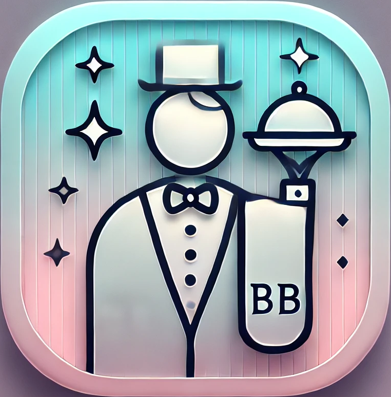

<div class="nav-container">
    <div class="top">
        
        <div class="nav-button-container">
            <button class="nav-button" mat-icon-button color="accent"
                (click)="openLoginModal()">
                <mat-icon
                    class="mat-icon-48">login</mat-icon>
            </button>
        </div>
    </div>
    <div class="line"></div>
    <app-left-bar></app-left-bar>
</div>